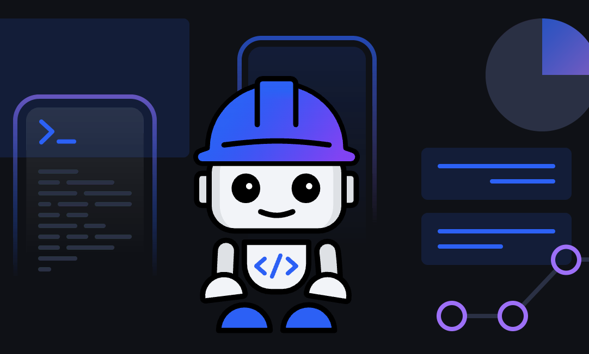

IBM Bob — Technical Walkthrough
Technical Architect – Agentic AI / IBM

ℹ️ The information displayed on this presentation is based on the official developer documentation. The goal of this content is educational only.
Core Concepts & Loop Engineering
Understanding how raw Large Language Models evolve into Enterprise AI Coding Partners through robust software architectures.
What is IBM Bob?
An AI Software Development Lifecycle partner. Bob sits across the whole software development lifecycle and works natively against enterprise-scale repositories.
What is an AI Agent?
An Artificial Intelligence Agent is a system that autonomously performs tasks by designing workflows with available tools, powered by foundational LLMs.
Agent Harness
Agent = Model + Harness
A harness is all code, configuration, and execution logic that isn't the model itself. It provides state, tool execution, feedback loops, and boundaries.
Loop Engineering
The practice of designing agentic workflows (or loops) that iteratively guide AI agents toward completing user goals with minimal human intervention.
Capabilities & Surfaces
How Bob interacts with codebases, system terminals, and external services in safe, configurable environments.
Four Primary Capabilities
In a highly controlled and authorized manner, Bob is an active coding partner executing tools to:
- Read repositories: Gathers deep context and analyzes complex files.
- Write files: Directly writes and modifies code or documents.
- Run terminal commands: Tests builds, runs tests, and applies lint/style.
- Call external services: Connects to authorized external APIs and tooling.
Product Surfaces
Bob IDE
Gathers context automatically from open editor tabs and repository directories. Features inline diff previews, rollback capabilities, literate coding, and Bobalytics.
Bob Shell
Terminal-first surface. Accepts explicit @file reference tags. Runs interactively via bob chat or one-shot via bob run commands built for automation.
Configuration as a Code Artifact
Bob's behavior is driven entirely by files that live in the repository. This makes agent rules reviewable, diffable, and auditable through the standard PR approval process.
The Data Boundary (.bobignore)
Defines which files Bob's tools can read or write. Utilises identical syntax to .gitignore and is workspace-scoped.
Important: .bobignore is always implicitly ignored itself. Bob can never read or rewrite its own access rules.
Workspace Context (AGENTS.md)
Honours the emerging cross-vendor standard for agent instructions. Loaded automatically, versioned, and bridges the stateless gap across conversation sessions.
The /init Command
Scans a project structure and automatically generates a high-quality, structured AGENTS.md persistent context file. Run it inside Agent mode by typing /init in the chat.
Skills in Bob (.bob/skills/)
A lightweight folder-based format containing a SKILL.md metadata descriptor and custom instructions. Easily bundle automation scripts, runbooks, or reference templates.
Policy Priority & Load Order
Bob merges rules from multiple sources. Narrower scopes load later, putting them closer to the active task and giving them practical precedence over broader ones below:
- Global Rules:
~/.bob/rules/ - Workspace Mode-specific Rules:
.bob/rules-{mode}/(alongside mode custom instructions) - Project Context:
AGENTS.md - Workspace General Rules:
.bob/rules/
Security, Control & Model Routing
Enterprise-grade safety controls and performance optimizations built directly into Bob's core.
Least-Privilege Modes
Personas in YAML that set role definition, custom instructions, and available tools:
- Agent mode: Complete access, and the only mode allowed to execute terminal commands.
- Plan mode: Has Edit privileges but cannot run terminal commands.
- Ask mode: Read-only by design. Instructions prevent switching to edit/execute.
- Custom modes: Defined under
.bob/custom_modes.yaml.
Runtime Permissions
Approvals trigger one prompt at a time. Complex commands collapse into previews by default. Proposed terminal scripts are directly editable inside the prompt before approving.
Model Router
A custom classifier trained on real Bob usage data. Maps tasks to three optimized tiers to balance quality, performance, and cost, preserving prefix cache:
- Fast Tier
- Premium Tier
- Ultra Tier
Industry Standards
- MCP: Connect specialized servers under
.bob/mcp.json. - Hooks: Configure life-cycle automation triggers inside
.bob/settings.json. - Plugins: Install ecosystem plugins under
.bob/plugins/. - Rollback: Automatically snapshots project state before executing any command.
Path to IBM Bob Certification
Demonstrate deep understanding of Bob's core capabilities, workflow automation, and secure enterprise practices.
1. IBM Bob Free Trial
Explore the full capabilities of your AI development partner with a 30-day free trial containing 50 Bobcoins. No initial subscription required.
2. Get Certified
Earn the official credential: IBM Certified Bob v2 Developer Associate (Exam C9010800) to signal your AI enterprise coding skills.
Official Tutorials & Resources
- Official Blog: bob.ibm.com/blog ↗
- IDE Tutorials & Introduction: bob.ibm.com/docs/ide/tutorials/introduction ↗
- Download Bob: bob.ibm.com/download ↗
- Developer Tutorials: developer.ibm.com/components/ibm-bob/tutorials/ ↗